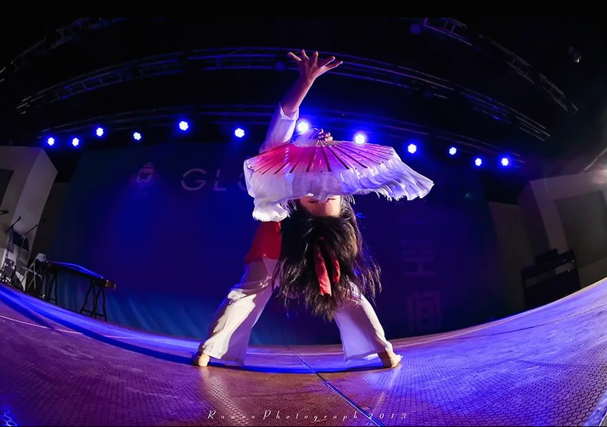

Moonlight
This is a contemporary Chinese fan dance I performed at Global Harbor in Shanghai.
The music is Yanfang Mei's song Moonlight on My Bed adapted the famouse work Moonlight on My Bed Chinese poet Li Bai of the Tang Dynasty.
I partially choreographed the dance so as to convey an experience of adventuring into the world and missing home.

Quiet Night Thoughts - Li Bai
In front of my bed, the bright moon shines,
I thought it was frost on the ground.
I raise my head and gaze at the shimmering moon,
Then lower my head and miss my home.